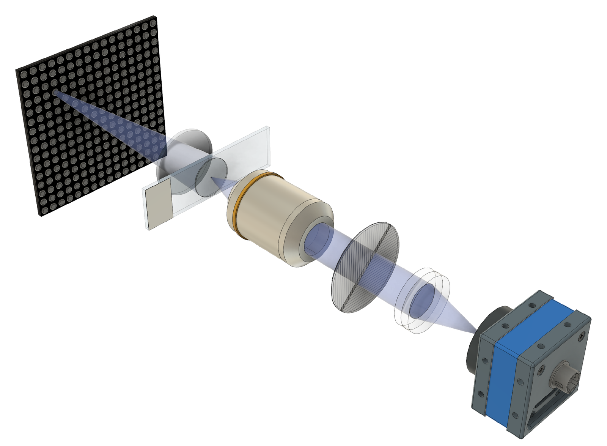
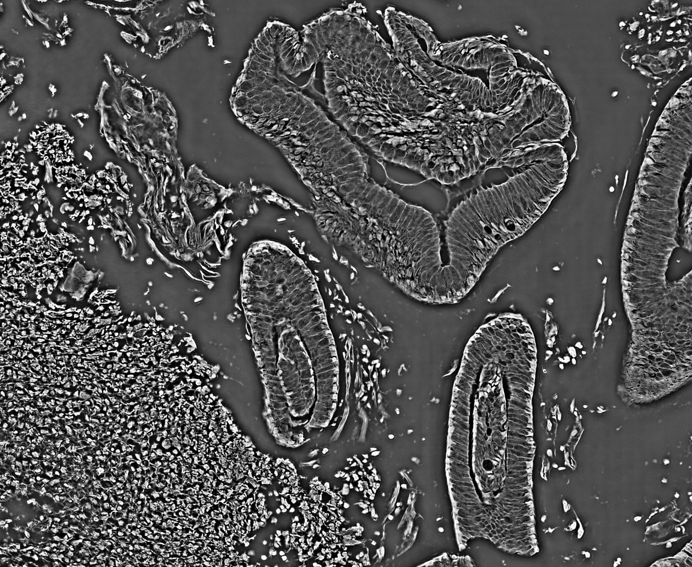
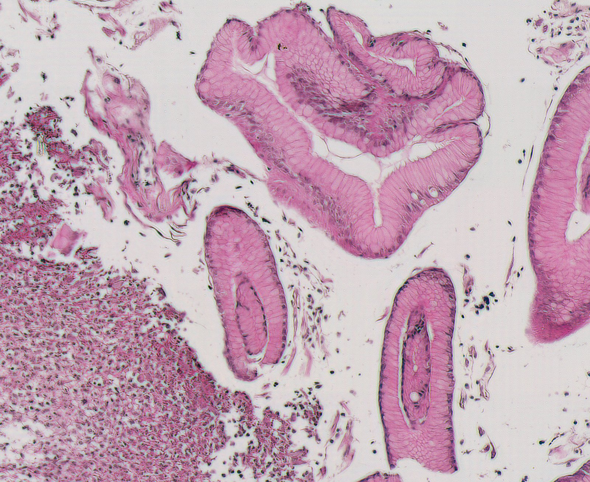
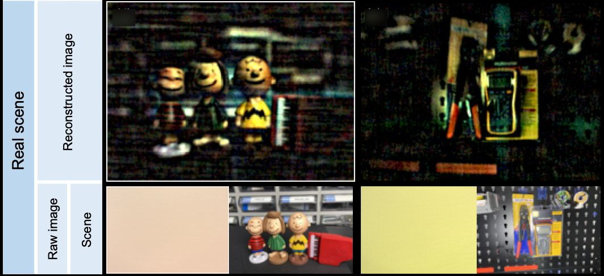

Research
Four areas of work: computational microscopy, including virtual staining of tissue slides; lensless cameras and learned optics; dynamic speckle imaging of sample dynamics such as blood flow; and interactive biology. Each section lists its projects, with papers, code and data on the theme pages.
Computational Microscopy
Fourier ptychography (FP) illuminates a sample from many angles and combines the low-resolution images computationally into one wide-field, high-resolution image with quantitative phase. We have built smartphone, single-shot and polarization-resolved FP microscopes and use them for virtual staining of tissue slides.
Projects 7

The same unstained cells in a raw low-resolution bright-field image (left) and in the FP quantitative phase image (right). IIL (conference presentation)
Quantitative phase of an unstained tissue section rendered as a 3D surface, where height shows optical thickness. IIL (conference presentation)
Virtual staining
We image unstained tissue slides with Fourier ptychographic microscopes and train neural networks to turn the measured phase into the appearance of chemically stained slides. Work with pathologists at Severance Hospital covers faded-slide restoration, faster scanning and stains other than H&E.
Projects 3


Whole-slide virtual H&E generated from a label-free FP phase image by unsupervised edge-guided virtual staining. IIL (conference presentation)
Virtual immunohistochemistry from label-free phase compared with chemical IHC. IIL (conference presentation)
Lensless Cameras and Learned Optics
A lensless camera replaces the lens with a thin phase mask above the image sensor and recovers the image computationally. We design the camera hardware, including the masks we fabricate, for each application, and develop the reconstruction algorithms. Applications include polarization, hyperspectral, eye-tracking and privacy-preserving imaging.
Projects 9
Lensless Cameras and Learned Optics: papers, code and projects

Fabricated phase mask held by tweezers, the lensless camera module next to a coin, and a side view showing its thickness. K. C. Lee et al., Optica 2023
Dynamic Speckle Imaging
We analyze speckle produced by dynamic scattering to measure the dynamics of a sample. Rolling-shutter speckle imaging measures blood flow from a single camera frame by using the row-by-row readout of a standard CMOS sensor. Applications include cerebral blood-flow mapping, pulse waveforms at the fingertip and real-time analysis with neural networks.
Projects 6
Mouse cortex maps from pixel-wise fitting, averaged fitting, TV-regularized fitting and a physics-constrained network. S. Byun et al., SPIE Photonics West 2025 (conference presentation)
Speckle-based eye-movement tracking: a rolling-shutter sensor with an elliptical aperture views laser speckle on the sclera; slanted speckles encode eye velocity. S. Byun et al., SPIE ABC 2025 (conference presentation)
Interactive Biology
Systems that couple a microscope and a projector so that people can interact in real time with living, light-responsive microorganisms, used in museum exhibits, installations, games and artworks.